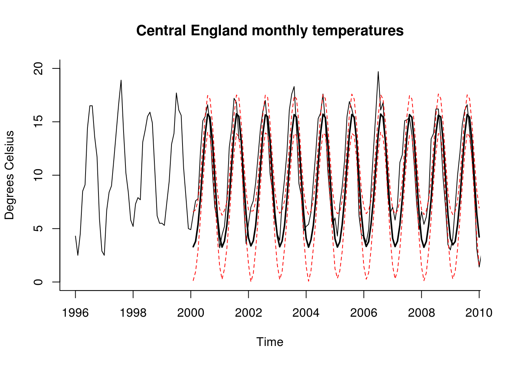

5.1 Simulation-based prediction intervals for ARIMA-GARCH models
In many cases, residuals from SARIMA models exhibit stochastic volatility (the variance is not constant).
Since there is no function (to the best of my knowledge) to fit a SARIMA-GARCH model, you can do so in multiple steps. That is, first first your SARIMA and use the residuals from the latter and plug-them as data for your GARCH model. The point estimates will be consistent and asymptotically normal, but the standard errors are incorrect and need to be adjusted (one uses so-called robust standard errors). Since the confidence intervals from arima are normal confidence intervals, you will need to adjust them manually. The following recipe can help you get prediction intervals manually by means of simulation.
The \(h\)-step ahead forecasts are best linear predictors, meaning they are fixed. An alternative is to simulate trajectories from the fitted models conditional on the observed past and use the latter to obtain prediction intervals. It is crucial to take into account previous errors and observations so that our simulations make sense.
To generate \(K\) step ahead forecasts from an ARIMA-GARCH model:
- Let \(v_t=\varepsilon_t\sigma_t\) and \(\varepsilon \sim F(0, 1)\), where \(F\) is e.g. a Normal or a Student-\(t\) distribution. Generate GARCH innovations based on \(\widehat{v}_{1:n}\) and \(\widehat{\sigma}_{1:n}\), estimating \({\sigma}_{n+1}^{n}\) using the GARCH recursions and sampling \(\varepsilon_t\), form a new variable \(\widetilde{v}_{n+1} = {\sigma}_{n+1}^{n}\varepsilon_{n+1}\). Iterate \(K+d\) times, where \(d\) is the number of differences.
- Pass to
arima.simthe following arguments
model: a list or the output ofarimaor variant thereofn: the integer \(K+d\)innov: the simulated series \(\widetilde{v}_{n+1}, \ldots, \widetilde{v}_{n+K}\) asstart.innov: the vector of residuals \(\widehat{v}_{1:n}\).n.start: the integer \(n-1\).
The function will thus return a time series drawn from your fitted ARIMA-GARCH model. Replicate this procedure \(B=1000\) times, say, then use as pointwise prediction intervals the 95% confidence interval based on the simulated values with rank 25 and 975. You could use the mean or median of the simulated trajectory as point forecast.
If you use fGarch package, the model adjusts for the distribution and for your ARMA-GARCH model; see the help in ?'predict,fGARCH-method'.
If you wish to fit the ARIMA-GARCH jointly, but try to constrain some parameters to mimic a SARIMA model, this is also possible using the rugarch package by fixing some of values of \(\boldsymbol{\theta}, \boldsymbol{\phi}\) to zero. Note that the optimization in rugarch will then often fail because the fit from the arima part is not stationary. Fixing parameters allows one to only estimate a handful of parameters.
Here is an example using monthly temperatures. Fitting an ARIMA without constraints with the same specification would require estimating 28 additional ARMA parameters.
library(rugarch)
# Mean monthly temperature in UK, from Hadley center
data(CETmonthly, package = "multitaper")
# Keep period 1900-2000
mtempfull <- ts(CETmonthly[, 3], start = c(CETmonthly[1, 1], CETmonthly[1, 2]),
frequency = 12)
mtemp <- window(mtempfull, start = c(1900, 1), end = c(1999, 12))
months <- rep(1:12, 100)
# Fit our favorite model - Fourier basis + SARMA(1,0,1)x(1,0,1)
meanreg <- cbind(cos(2 * pi * months/12), sin(2 * pi * months/12), cos(4 * pi *
months/12), sin(4 * pi * months/12))
sarima <- forecast::Arima(mtemp, order = c(3, 0, 1), seasonal = c(1, 0, 1),
xreg = meanreg)
# Not great, but will serve for the illustration
# This SARIMA is basically an ARMA model of high order with constraints
# These constraints can be roughly replicated by fixing most components to
# zero For example, if we have a SARMA (0,1)x(0,1)[12], coefficients 2 to 11
# are zero We will however estimate an extra MA parameter at lag 13 which
# would normally be prod(sarima$model$theta[c(1,12)])
# Extract AR coefficients via $model$phi Extract MA coefficients via
# $model$theta Find which parameters are zero and constrain them
lnames <- c(paste0("ar", which(sapply(sarima$model$phi, function(th) {
isTRUE(all.equal(th, 0))
}))), paste0("ma", which(sapply(sarima$model$theta, function(th) {
isTRUE(all.equal(th, 0))
}))))
constraints <- rep(list(0), length(lnames))
names(constraints) <- lnames
order <- c(length(sarima$model$phi), length(sarima$model$theta))
# To have a non-constant variance, we can let it vary per month Could try
# with dummies, but will stick with Fourier (issues with convergence of
# optimization routine otherwise) Creating a matrix of dummies varreg <-
# model.matrix(lm(months~as.factor(months)))[,-1] Model specification
model <- ugarchspec(variance.model = list(model = "eGARCH", garchOrder = c(0,
0), external.regressors = meanreg), mean.model = list(armaOrder = order,
include.mean = TRUE, external.regressors = meanreg), distribution.model = "std",
fixed.pars = constraints)
# Fit model
fitmodel <- ugarchfit(spec = model, data = mtemp)
# Coefficients of the model
fitmodel@fit$coef[fitmodel@fit$coef != 0] mu ar1 ar2 ar3 ar12
9.133351478 0.810482688 -0.082144383 -0.006738789 -0.403624702
ar13 ar14 ar15 ma1 ma12
0.903950549 -0.179310483 -0.034706531 -0.608517750 0.429732865
ma13 mxreg1 mxreg2 mxreg3 mxreg4
-0.804101668 -4.870149150 -3.902274279 -0.111705243 0.515741055
omega vxreg1 vxreg2 vxreg3 vxreg4
0.439684060 0.442367489 0.298552838 0.110085160 0.236309381
shape
65.572523216 # Not parsimonious, but all coefficients are significant
# Forecast K observations ahead
plotforecasted <- function(m = 60) {
# Here, the variance depends only on the monthly index - deterministic
# variation
sig <- sqrt(exp(fitmodel@fit$coef["omega"] + meanreg[1:m, ] %*% coef(fitmodel)[startsWith(prefix = "vxreg",
names(coef(fitmodel)))]))
arma_par <- coef(fitmodel)[as.logical(startsWith("ar", x = names(fitmodel@fit$coef)) +
startsWith("ma", x = names(fitmodel@fit$coef)))]
# Generate replications from the ARIMA model and add the deterministic part
simu_paths <- replicate(c(arima.sim(model = as.list(arma_par), n = m, innov = sig *
rt(m, df = fitmodel@fit$coef["shape"]), start.innov = as.vector(residuals(fitmodel)),
n.start = length(residuals(fitmodel)) - 1) + meanreg[1:m, ] %*% coef(fitmodel)[startsWith("mxreg",
x = names(fitmodel@fit$coef))] + coef(fitmodel)[1]), n = 1000)
# Extract the sample quantiles from the Monte-Carlo replications of the
# paths
confinter <- apply(simu_paths, 1, function(x) {
quantile(x, c(0.05, 0.5, 0.95))
})
# Plot the series with previous years
plot(window(mtempfull, start = c(1996, 1)), xlim = c(1996, m/12 + 2000 -
0.5), ylim = c(0, 20), main = "Central England monthly temperatures",
ylab = "Degrees Celsius", bty = "l")
# Add forecasts with 90% confidence intervals
matplot(x = seq(2000 + 1/12, by = 1/12, length.out = m), y = t(confinter),
lty = c(2, 1, 2), lwd = c(1, 2, 1), type = rep("l", 3), col = c(2, 1,
2), add = TRUE)
}
# Plot the forecasts
plotforecasted(120)
In this specific example, since the variance is not autoregressive and depends only on covariates, we need not simulate paths conditional on the last observed values of \(\widehat{v}_t\).